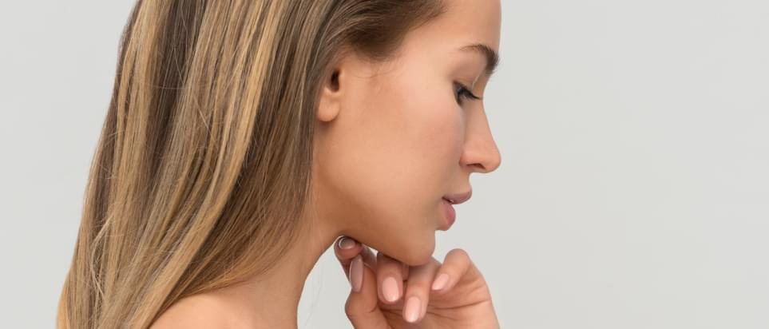

Влияние питания на здоровье кожи
Внешний вид – это визитная карточка каждого человека. Именно поэтому необходимо о ней заботиться и оберегать. В этой статье пойдет речь об уходе за сухой кожей и способам исправить ситуацию.
Не существует панацеи, которая навсегда избавит вас от сухости. Большинство средств дают лишь временный результат. Постоянный эффект появляется лишь тогда, когда исчезает причина (например, если это заболевание).
Особенности сухой кожи
Сухость – это состояние кожи, при котором возникает недостаток поступающей жидкости.
Первый тип сухой кожи обусловлен дефицитом жидкости, а второй – недостаточной работой сальных желез.
Первый тип (обезвоженная)
Такая кожа характеризуется шелушением и сухостью, но у нее не пропадают проявления акне. На таком типе кожи могут возникать угри и прыщи. Избавиться от такой проблемы довольно просто: достаточно восполнить водный баланс.
Второй тип (сухая за счет недостаточной выработки кожного сала)
Такая кожа характеризуется шелушением и сухостью, но у нее не пропадают проявления акне. На таком типе кожи могут возникать угри и прыщи. Избавиться от такой проблемы довольно просто: достаточно восполнить водный баланс.
Основные причины сухости кожи
- Внешняя среда. Такое состояние наблюдается у жителей стран с низкой влажностью воздуха, которые находятся далеко от моря. В зимний период состояние кожи становится значительно хуже. Сухость воздуха повышается не только снаружи, но и внутри домов из-за активной работы отопления.
- Постоянное нахождение на солнце или посещение соляриев.
- Наследственные проблемы.
- Плохой подбор процедур и средств для ухода. Ходите только к проверенным специалистам и не подбирайте уходовые процедуры самостоятельно.
- Нездоровый образ жизни. Недостаточное количество воды или избыток жирных продуктов и соли приводит к обезвоживанию.
Как ухаживать за сухой кожей лица?
Уход за кожей для достижения видимых результатов должен быть комплексным. Комплекс включает в себя не только использование специализированных процедур и средств, но и переход к здоровому образу жизни.
Уход за собственным телом – это ежедневный труд, который вознаграждается красотой, хорошим самочувствием и долголетием.


Комментарии (2):
Артем Мельник
20.01.2019Спасибо за статью. У меня имеется проблема в виде белых прыщей на предплечьях которые внутри содержат некую белую субстанцию. Имеет ли смысл попробовать какой-нибудь из препаратов рекомендованных Вами в статье?
Андрей Иванов
18.01.2019А как на процессы на коже влияет наличие татуировок?
admin
18.01.2019Татуировка — это повреждение кожи и кожа реагирует на него как положено — воспалением и заживлением.